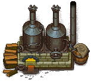
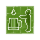

Zombie-brewery
| Zombie-brewery | |
|---|---|
 | |
Basic information
| |
Required Technology :
|
Zombie-brewery |
Related pages :
|
Farming |
Building Information
| |
Horizontal x Vertical :
|
10x5 |
Rotatable :
|
False |
Location(s)
| |
| Cellar | |

The zombie-brewery is a crafting station introduced with the Stranger Sins DLC, that may be built in the cellar after the Zombie-brewery technology has been unlocked. Here, a zombie can work towards producing beer from water, hops, and wheat. This workstation has a pre-designated location in the top-right corner of the cellar, with the zombie-winery in the opposite corner. Unlike the brewing stand, this workstation cannot make mead.
Note: The player can't work at this station on their own, the products must be queued and the zombie then prepares them. It's possible to order several products at once in a task queue.
Cost
| Icon | Materials Required | Energy | Notes |
|---|---|---|---|
 |
32× A piece of stone 12× Simple iron parts 4× Complex iron parts |
- |
Requires: Zombie-brewery. |

Recipes
| Item Produced | Materials Required | Time |
|---|---|---|
| 10× A mug of beer |
50× Water 3× Hops 15× Wheat |
5:00 @ 40%e 3:05 @ 65%e 2:35 @ 77.5%e 2:00 Base* |
* The time which was arbitrarily chosen for this craft, diminished by the inefficiency of the given zombie.
| ||||||||